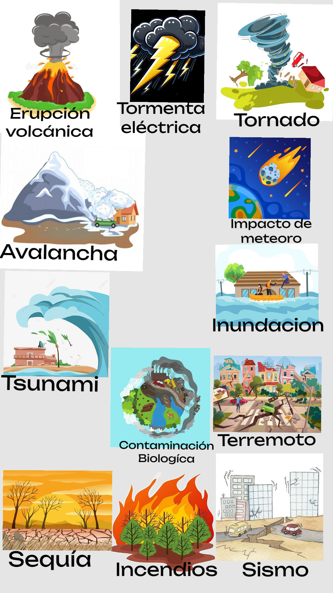

LA GEOSFERA. EL PODER DE LA TIERRA
Comenzamos una nueva unidad didáctica en la que vamos a descubrir cómo funciona nuestro planeta y cómo los procesos geológicos influyen directamente en nuestra vida diaria.
A lo largo de esta unidad aprenderemos qué es la geosfera, cuáles son las capas internas de la Tierra y cómo y por qué tienen lugar fenómenos naturales como los terremotos, los volcanes, la erosión, los deslizamientos de tierra o las inundaciones.
Analizaremos también los principales riesgos geológicos que afectan a Andalucía y cómo podemos prevenir sus consecuencias.

Durante esta unidad trabajaremos mediante actividades prácticas, investigaciones, trabajo en equipo, simulaciones de laboratorio, cuestionarios digitales y un Breakout EDU donde tendréis que resolver retos relacionados con los contenidos aprendidos. El objetivo será aprender de forma activa, participativa y aplicada a situaciones reales.
Como producto final, elaboraréis por grupos una infografía digital sobre un riesgo geológico en Andalucía, donde deberéis explicar:
- qué riesgo habéis elegido
- dónde se produce
- Cuáles son sus causas
- qué consecuencias puede tener
- qué medidas preventivas se pueden aplicar
Después, presentaréis vuestra infografía mediante una exposición oral al resto de la clase, defendiendo vuestro trabajo y mostrando vuestras conclusiones.
Para ello utilizaremos herramientas digitales como Canva, Genially, Plickers y otros recursos interactivos que os ayudarán a organizar la información y comunicarla de forma clara y visual. También trabajaremos aspectos importantes como el uso responsable de la tecnología, la protección de datos personales y la seguridad digital.
En esta unidad no solo aprenderemos contenidos de Biología y Geología, sino que también desarrollaremos competencias como el trabajo cooperativo, la expresión oral, el pensamiento crítico y la resolución de problemas.
El objetivo final será entender que conocer la Tierra no solo sirve para aprobar una asignatura, sino también para comprender mejor el mundo en el que vivimos y saber cómo actuar ante los riesgos naturales que pueden formar parte de nuestro entorno.
Comenzamos un viaje al interior de la Tierra para descubrir su fuerza, sus cambios y su enorme poder.
Características SdA